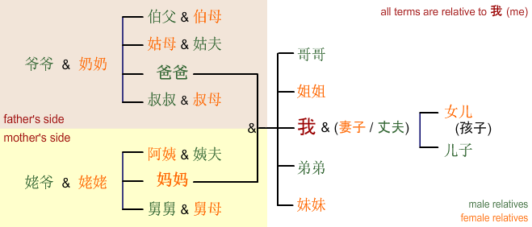

Family
Relationship terms in Chinese are quite complex. The diagram below gives a simple overview.
| 爷爷 | yéye | paternal grandfather | 奶奶 | nǎinai | paternal grandmother |
| 姥爷 | lǎoye | maternal grandfather | 姥姥 | lǎolao | maternal grandmother |
| 叔叔 | shūshu | father's younger brother | 叔母 | shūmǔ | wife of father's younger brother |
| 伯父 | bófù | father's older brother | 伯母 | bómǔ | wife of father's older brother |
| 姑母 | gūmǔ | paternal aunt | 姑夫 | gūfu | husband of paternal aunt |
| 阿姨 | āyí | maternal aunt | 姨夫 | yífu | husband of maternal aunt |
| 舅舅 | jiùjiu | maternal uncle | 舅母 | jiùmu | wife of maternal uncle |
| 爸爸 | bàba | father | 妈妈 | māma | mother |
| 我 | wǒ | I | |||
| 弟弟 | dìdi | younger brother | 妹妹 | mèimei | younger sister |
| 哥哥 | gēge | older brother | 姐姐 | jiějie | older sister |
| 孩子 | háizi | child, children | |||
| 女儿 | nǚ'ér | daughter | 儿子 | érzi | son |
|  | |||||